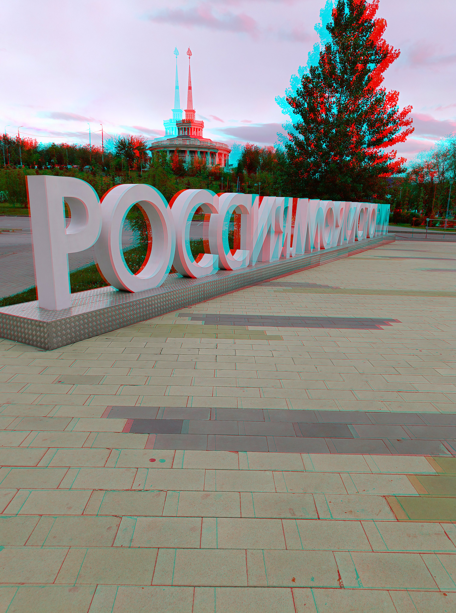
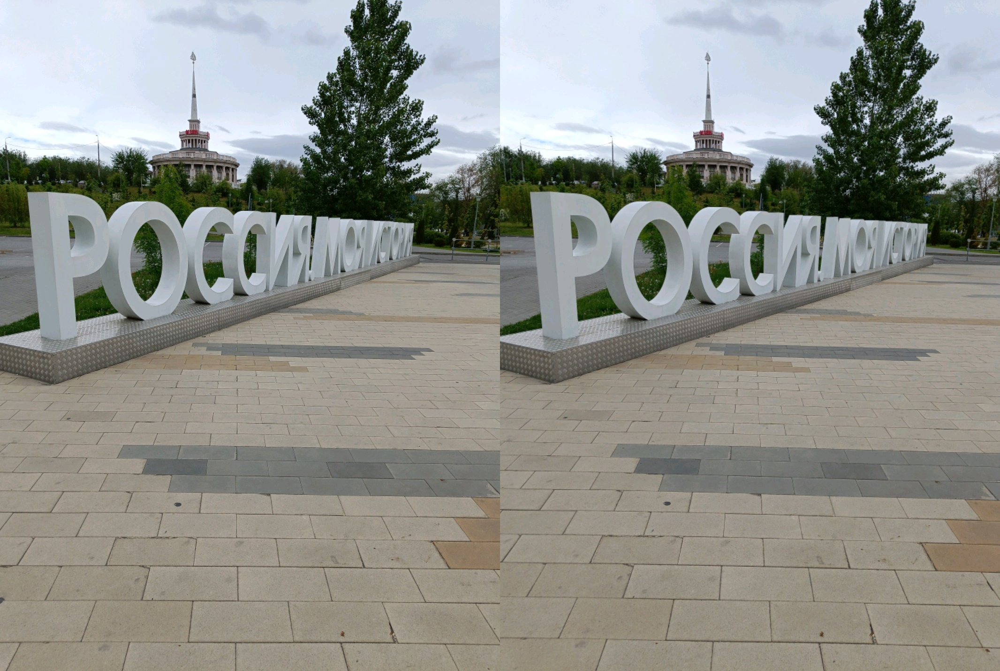

Максим Лашин
Привет, я тест
Назад
Мои хобби
-
Стереофото
-
Довольно долгое время я увлекаюсь созданием стереофото в виде анаглиф изображений или стереопар для параллельного взгляда. Практически всегда когда рядом есть достопримечательность - стараюсь ее запечатлеть.
- 
- 
-
Музыка
-
Иногда в свободное время я пишу музыку. Я имею несколько музыкальных инструментов и немного оборудования, чего уже достаточно для обычной записи в домашних условиях.
-